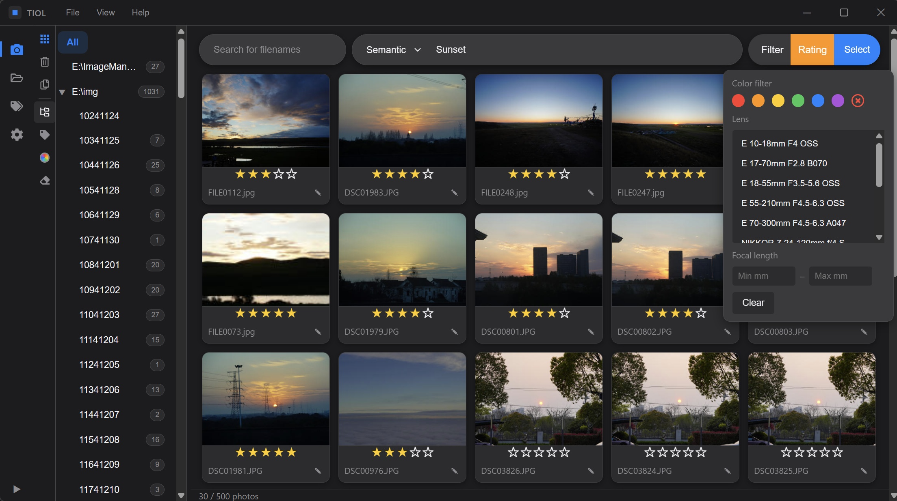

Every photo you own,
one sentence away.
TIOL indexes your library on-device and searches it by meaning — query
"foggy harbour at dawn" and it actually finds it. No cloud round-trips,
no importing, no babysitting folders.

An index that lives on your machine.
Automatic tagging
Point TIOL at a folder and the indexer goes to work — subjects, scenes, colour, time of day — written back into your files as keywords. The archive organises itself while you keep shooting.
no uploads
Semantic search
Search the way you remember. “Foggy harbour at dawn” is a perfectly valid query — matching happens on meaning and mood, not just filenames and folder names.
matching
Engineered to disappear
A small portable build — no installer ceremony, no background services quietly eating RAM. Launch it, work, close it. Windows and macOS alike.
2 builds
Two quiet superpowers.
Light & dark, done properly
A calibrated dark theme for late-night culling sessions, and a paper-light mode for the studio. The entire interface follows your choice instantly — no restart, no half-themed corners.


Every photo remembers its glass
Filter the library by lens, camera body or focal length. When you need the exact compression of the 85mm, or everything you shot wide at 24mm, it's one click — read straight from each file.
Get the latest build.
Windows
x64 · portable zip · no installer
macOS
arm64 · Apple Silicon · portable zip